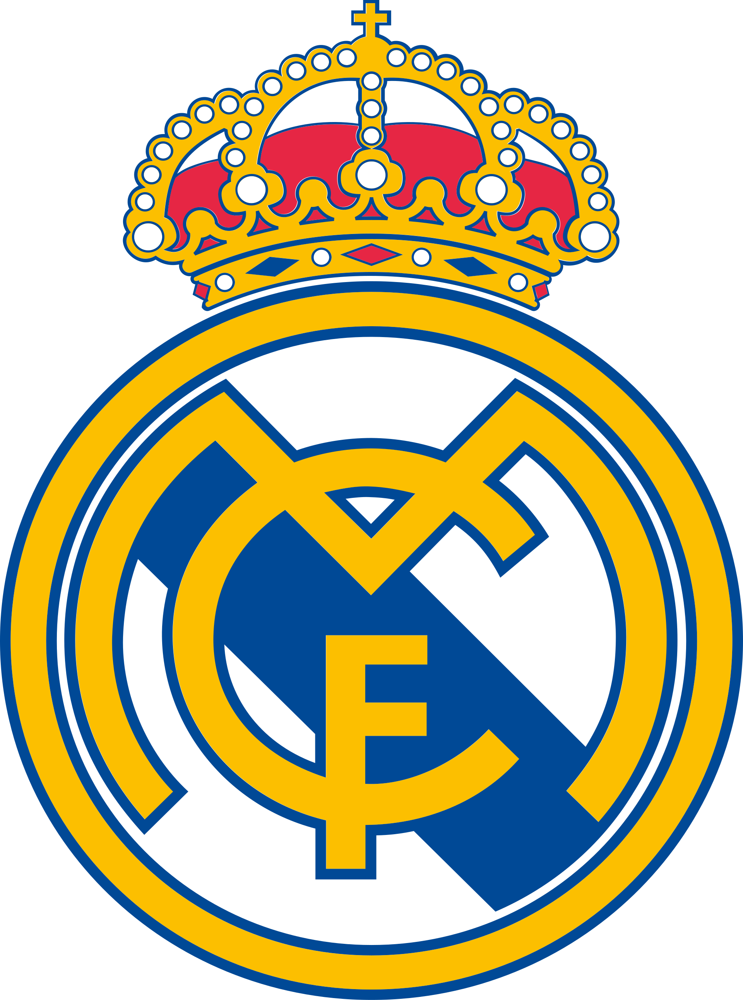
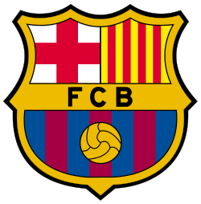
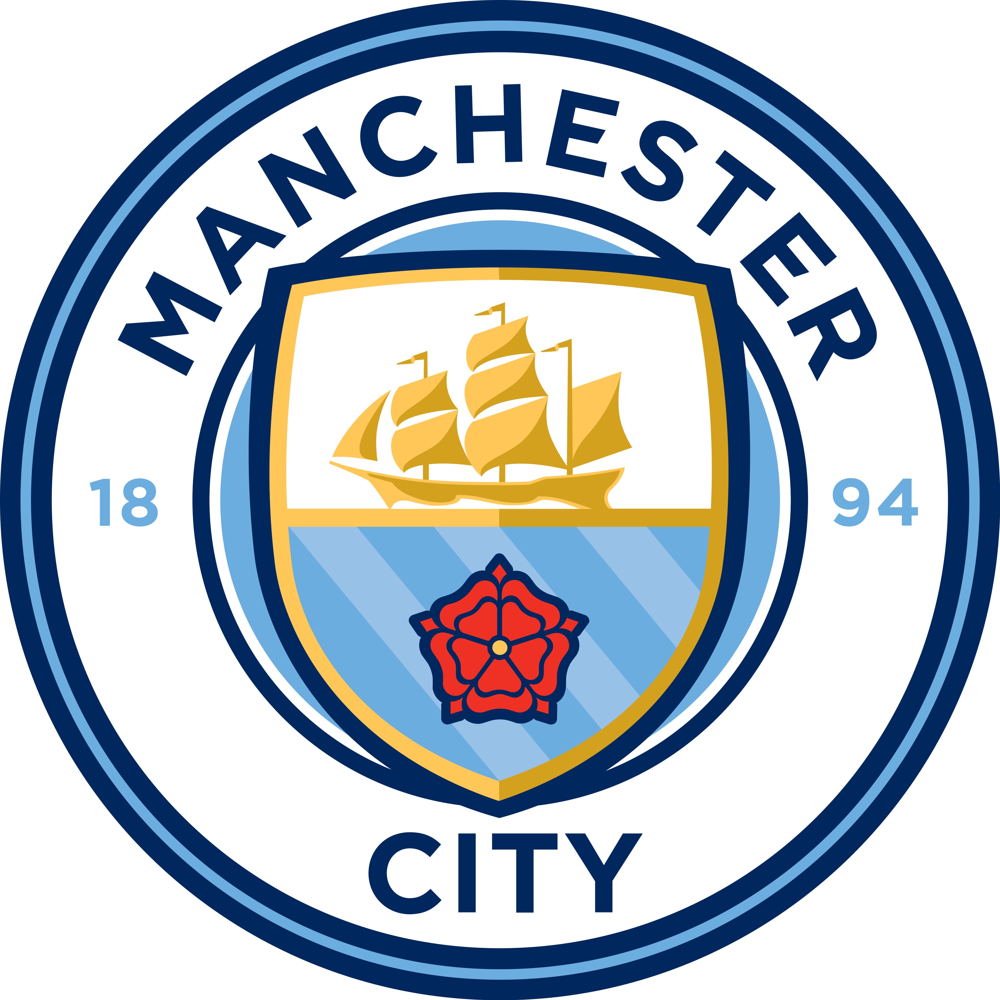
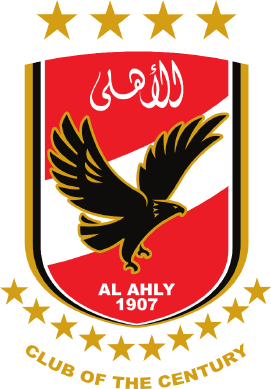
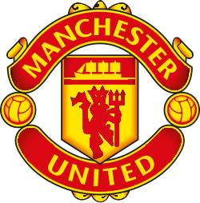

SPAINReal Madrid
One of the most successful clubs in European football.
THE HOME OF FOOTBALL
Discover legendary clubs, iconic players, historic competitions and unforgettable moments in football history.
Football Clubs
Legendary Players
Competitions
THE GIANTS
Discover the teams that shaped football history.

SPAINOne of the most successful clubs in European football.

SPAINFamous for its football philosophy and legendary players.
 ENGLAND
ENGLANDA historic English club with a passionate fanbase.
A dominant force in German and European football.

ENGLANDKnown for modern tactics and attacking football.

EGYPTA historic Egyptian club with major African success.

ENGLANDA globally followed club with a rich football heritage.
COMPETITIONS
Explore the competitions followed by millions of fans.
England · Top-flight football
Spain · Technical football
Italy · Tactical battles
Germany · Attacking football
Europe · The biggest club stage
Egypt · Local football passion
FOOTBALL ICONS
Players whose names will live forever in football.

Argentina

Portugal
.jpg)
Egypt

France
PERSONAL PICKS
My personal top three — and I stand by it.
EGYPT
Known for its passionate supporters, historic domestic success and strong presence in African football.
THE RED GIANTSSPAIN
A global football powerhouse, famous for its European history, iconic players and winning mentality.
LOS BLANCOSENGLAND
A historic English club with generations of memorable teams, legendary players and loyal fans.
THE RED DEVILSWHAT THEY SHARE
Al Ahly, Real Madrid and Manchester United come from different football cultures, but they share several things: a huge global fanbase, iconic club identities, rich histories, legendary players and the pressure to compete for major trophies. Their supporters help make each club more than just a team.
NUMBERS THAT MATTER
A quick look at iconic football achievements and competitions.
WORLD CUP CHAMPIONS
AFRICAN FOOTBALL
EUROPEAN FOOTBALL
CLUB SPOTLIGHT
| Club | Country | Founded | League |
|---|---|---|---|
| Real Madrid | Spain | 1902 | La Liga |
| FC Barcelona | Spain | 1899 | La Liga |
| Liverpool FC | England | 1892 | Premier League |
| Bayern Munich | Germany | 1900 | Bundesliga |
| Al Ahly SC | Egypt | 1907 | Egyptian Premier League |
| Manchester United | England | 1878 | Premier League |